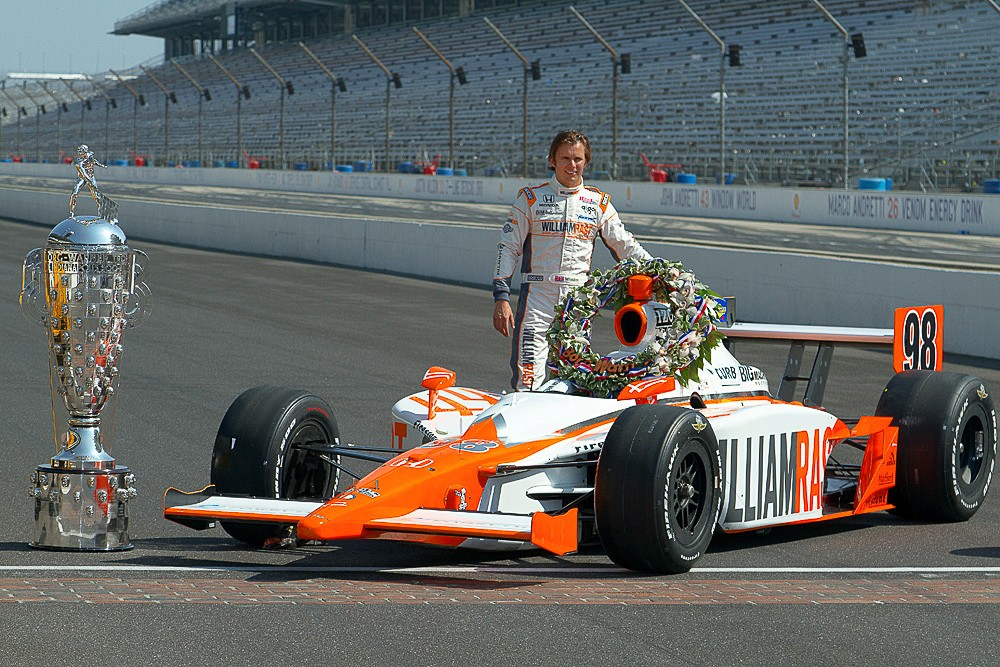

La victoria del hombre que nunca lideró
la edición número 100 de las legendarias 500 Millas de Indianápolis
El 29 de mayo de 2011, el sol brillaba sobre el histórico óvalo del Indianapolis Motor Speedway, donde miles de fanáticos se reunieron para presenciar la edición número 100 de las legendarias 500 Millas de Indianápolis. Entre los favoritos, muchos nombres resonaban con fuerza. Pero uno no figuraba en las quinielas: Dan Wheldon, campeón de 2005, estaba sin equipo a tiempo completo y corría esa carrera como sustituto, en un coche preparado casi a último momento.
La carrera avanzaba con intensidad, como siempre ocurre en Indy. Cientos de adelantamientos, paradas estratégicas, choques, banderas amarillas… pero algo curioso pasaba: el coche número 98 de Wheldon nunca aparecía en la punta. No lideraba. No se le veía peleando por el liderato. Se mantenía allí, siempre cerca, pero sin llamar demasiado la atención.
En la última vuelta, la gloria parecía estar escrita para un joven novato llamado J.R. Hildebrand. Con solo unas curvas por recorrer, su victoria parecía segura. Los comentaristas ya hablaban de su nombre inscrito entre los grandes. Los fanáticos se levantaban de sus asientos para aplaudir la nueva leyenda.
Y entonces… ocurrió lo impensado.
En la curva final, Hildebrand trató de adelantar a un coche rezagado por la parte exterior, pero perdió agarre y se fue directo contra el muro. Su coche, destrozado, siguió deslizándose sobre el costado, arrastrando la gloria que se le escapaba entre chispas y metal.
Detrás de él, como un cazador paciente, venía Dan Wheldon. Nunca había liderado una vuelta en toda la carrera, pero en ese instante crucial, pasó al coche herido de Hildebrand a metros de la meta.
Wheldon cruzó la línea de llegada primero, sin haber estado jamás al frente… hasta ese momento. Ganó sin liderar una sola vuelta completa. Solo los últimos segundos. Solo los últimos metros.
Era una victoria improbable, una historia para los libros. Para Wheldon, fue también su última victoria, ya que fallecería trágicamente meses después en una carrera en Las Vegas.
Pero ese día, en Indianápolis, el destino le regaló a Wheldon una última corona. La del hombre que ganó sin liderar… hasta que importó.